Console Go2
SLAM attivo
mondo
magazzino · 30 × 20 m
uffici · 24 × 14 m
deposito · 20 × 16 m
--:--:--
Registro
slam_abra.log
Il cane che
disegna la mappa
Unitree Go2 · LiDAR L2 · KISS-SLAM · A* · ArUco
carico mesh Go2 e mondo…